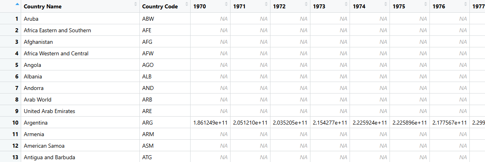

# Task 1.1: Cleaning the Data
clean_up_wb_csv <- function(
in_file_name,
out_file_name) {
is_empty <- function(x) {
if (is.character(x)) {
is.na(x) | trimws(x) == ""
} else {
is.na(x)
}
}
wb_data <- read_csv(
in_file_name,
skip = 4,
na = c("", "NA", ".."),
show_col_types = FALSE
) |>
# Clean column names
rename_with(trimws) |>
# Remove columns C and D, if they exist
select(-any_of(c("Indicator Name", "Indicator Code"))) |>
# Remove completely empty columns
select(where(~ !all(is_empty(.x)))) |>
# Remove completely empty rows
filter(if_any(everything(), ~ !is_empty(.x))) |>
# Remove rows without country names
filter(
!is.na(`Country Name`),
trimws(`Country Name`) != ""
)
write_csv(wb_data, out_file_name)
return(wb_data)
}Week5Lab
Task 1: Tidyverse Data Workflow
Task 1.1: Cleaning the Data
This project analyses the indicator “Adjusted net national income (constant 2015 US$)” from the world bank. This indicator measures a country’s gross national income after subtracting the consumption of fixed capital and the depletion of natural resources. In simpler terms, it adjusts national income to account for the wearing out of produced assets, such as machinery and buildings, as well as the loss of natural resources, such as forests, energy resources, and minerals. The indicator is measured in constant 2015 US dollars, which means the values have been adjusted for price changes over time, allowing comparisons across different years without inflation distorting the results. This makes the indicator useful for studying long-term economic trends. It is important because ordinary income measures may make a country appear wealthier even when that growth depends on using up natural resources or replacing damaged capital. By analysing adjusted net national income, we can better understand whether countries are experiencing more sustainable forms of economic growth.

# Task 1.2: Importing the Data as Data Frame
clean_up_wb_csv("AdjustedNetNationalIncome/API_NY.ADJ.NNTY.KD_DS2_en_csv_v2_3377.csv", "indicator.csv")New names:
• `` -> `...71`# A tibble: 266 × 54
`Country Name` `Country Code` `1970` `1971` `1972` `1973` `1974`
<chr> <chr> <dbl> <dbl> <dbl> <dbl> <dbl>
1 Aruba ABW NA NA NA NA NA
2 Africa Eastern a… AFE NA NA NA NA NA
3 Afghanistan AFG NA NA NA NA NA
4 Africa Western a… AFW NA NA NA NA NA
5 Angola AGO NA NA NA NA NA
6 Albania ALB NA NA NA NA NA
7 Andorra AND NA NA NA NA NA
8 Arab World ARB NA NA NA NA NA
9 United Arab Emir… ARE NA NA NA NA NA
10 Argentina ARG 1.86e11 2.05e11 2.04e11 2.15e11 2.23e11
# ℹ 256 more rows
# ℹ 47 more variables: `1975` <dbl>, `1976` <dbl>, `1977` <dbl>, `1978` <dbl>,
# `1979` <dbl>, `1980` <dbl>, `1981` <dbl>, `1982` <dbl>, `1983` <dbl>,
# `1984` <dbl>, `1985` <dbl>, `1986` <dbl>, `1987` <dbl>, `1988` <dbl>,
# `1989` <dbl>, `1990` <dbl>, `1991` <dbl>, `1992` <dbl>, `1993` <dbl>,
# `1994` <dbl>, `1995` <dbl>, `1996` <dbl>, `1997` <dbl>, `1998` <dbl>,
# `1999` <dbl>, `2000` <dbl>, `2001` <dbl>, `2002` <dbl>, `2003` <dbl>, …indicator <- read_csv("indicator.csv")Rows: 266 Columns: 54
── Column specification ────────────────────────────────────────────────────────
Delimiter: ","
chr (2): Country Name, Country Code
dbl (52): 1970, 1971, 1972, 1973, 1974, 1975, 1976, 1977, 1978, 1979, 1980, ...
ℹ Use `spec()` to retrieve the full column specification for this data.
ℹ Specify the column types or set `show_col_types = FALSE` to quiet this message.clean_up_wb_csv("world_bank_total_population/API_SP.POP.TOTL_DS2_en_csv_v2_267553.csv", "population.csv")New names:
• `` -> `...71`# A tibble: 266 × 67
`Country Name` `Country Code` `1960` `1961` `1962` `1963` `1964` `1965`
<chr> <chr> <dbl> <dbl> <dbl> <dbl> <dbl> <dbl>
1 Aruba ABW 5.49e4 5.56e4 5.63e4 5.70e4 5.76e4 5.82e4
2 Africa Eastern and … AFE 1.30e8 1.34e8 1.37e8 1.41e8 1.45e8 1.49e8
3 Afghanistan AFG 9.04e6 9.21e6 9.40e6 9.60e6 9.81e6 1.00e7
4 Africa Western and … AFW 9.76e7 9.97e7 1.02e8 1.04e8 1.06e8 1.09e8
5 Angola AGO 5.23e6 5.30e6 5.35e6 5.41e6 5.46e6 5.52e6
6 Albania ALB 1.61e6 1.66e6 1.71e6 1.76e6 1.81e6 1.86e6
7 Andorra AND 9.51e3 1.03e4 1.11e4 1.19e4 1.28e4 1.36e4
8 Arab World ARB 9.15e7 9.39e7 9.64e7 9.90e7 1.02e8 1.04e8
9 United Arab Emirates ARE 1.31e5 1.38e5 1.45e5 1.52e5 1.60e5 1.67e5
10 Argentina ARG 2.04e7 2.07e7 2.11e7 2.14e7 2.18e7 2.21e7
# ℹ 256 more rows
# ℹ 59 more variables: `1966` <dbl>, `1967` <dbl>, `1968` <dbl>, `1969` <dbl>,
# `1970` <dbl>, `1971` <dbl>, `1972` <dbl>, `1973` <dbl>, `1974` <dbl>,
# `1975` <dbl>, `1976` <dbl>, `1977` <dbl>, `1978` <dbl>, `1979` <dbl>,
# `1980` <dbl>, `1981` <dbl>, `1982` <dbl>, `1983` <dbl>, `1984` <dbl>,
# `1985` <dbl>, `1986` <dbl>, `1987` <dbl>, `1988` <dbl>, `1989` <dbl>,
# `1990` <dbl>, `1991` <dbl>, `1992` <dbl>, `1993` <dbl>, `1994` <dbl>, …population <- read_csv("population.csv")Rows: 266 Columns: 67
── Column specification ────────────────────────────────────────────────────────
Delimiter: ","
chr (2): Country Name, Country Code
dbl (65): 1960, 1961, 1962, 1963, 1964, 1965, 1966, 1967, 1968, 1969, 1970, ...
ℹ Use `spec()` to retrieve the full column specification for this data.
ℹ Specify the column types or set `show_col_types = FALSE` to quiet this message.# Task 1.3: Removing Rows not Pertaining to Countries
country_codes <- read_csv("country_codes.csv")Rows: 218 Columns: 3
── Column specification ────────────────────────────────────────────────────────
Delimiter: ","
chr (3): country_name_en, country_code, un_subregion
ℹ Use `spec()` to retrieve the full column specification for this data.
ℹ Specify the column types or set `show_col_types = FALSE` to quiet this message.nrow(indicator)[1] 266nrow(population)[1] 266reducing_function <- function(
old_table, new_table, country_codes) {
new_table <- old_table |>
semi_join(country_codes, by = c("Country Code" = "country_code"))
}
population_reduced <- reducing_function(population, population_reduced, country_codes)
indicator_reduced <- reducing_function(indicator, indicator_reduced, country_codes)
population_reduced# A tibble: 217 × 67
`Country Name` `Country Code` `1960` `1961` `1962` `1963` `1964` `1965`
<chr> <chr> <dbl> <dbl> <dbl> <dbl> <dbl> <dbl>
1 Aruba ABW 5.49e4 5.56e4 5.63e4 5.70e4 5.76e4 5.82e4
2 Afghanistan AFG 9.04e6 9.21e6 9.40e6 9.60e6 9.81e6 1.00e7
3 Angola AGO 5.23e6 5.30e6 5.35e6 5.41e6 5.46e6 5.52e6
4 Albania ALB 1.61e6 1.66e6 1.71e6 1.76e6 1.81e6 1.86e6
5 Andorra AND 9.51e3 1.03e4 1.11e4 1.19e4 1.28e4 1.36e4
6 United Arab Emirates ARE 1.31e5 1.38e5 1.45e5 1.52e5 1.60e5 1.67e5
7 Argentina ARG 2.04e7 2.07e7 2.11e7 2.14e7 2.18e7 2.21e7
8 Armenia ARM 1.86e6 1.93e6 1.99e6 2.06e6 2.12e6 2.18e6
9 American Samoa ASM 2.01e4 2.07e4 2.13e4 2.20e4 2.27e4 2.34e4
10 Antigua and Barbuda ATG 5.56e4 5.65e4 5.73e4 5.81e4 5.90e4 6.00e4
# ℹ 207 more rows
# ℹ 59 more variables: `1966` <dbl>, `1967` <dbl>, `1968` <dbl>, `1969` <dbl>,
# `1970` <dbl>, `1971` <dbl>, `1972` <dbl>, `1973` <dbl>, `1974` <dbl>,
# `1975` <dbl>, `1976` <dbl>, `1977` <dbl>, `1978` <dbl>, `1979` <dbl>,
# `1980` <dbl>, `1981` <dbl>, `1982` <dbl>, `1983` <dbl>, `1984` <dbl>,
# `1985` <dbl>, `1986` <dbl>, `1987` <dbl>, `1988` <dbl>, `1989` <dbl>,
# `1990` <dbl>, `1991` <dbl>, `1992` <dbl>, `1993` <dbl>, `1994` <dbl>, …indicator_reduced# A tibble: 217 × 54
`Country Name` `Country Code` `1970` `1971` `1972` `1973` `1974`
<chr> <chr> <dbl> <dbl> <dbl> <dbl> <dbl>
1 Aruba ABW NA NA NA NA NA
2 Afghanistan AFG NA NA NA NA NA
3 Angola AGO NA NA NA NA NA
4 Albania ALB NA NA NA NA NA
5 Andorra AND NA NA NA NA NA
6 United Arab Emir… ARE NA NA NA NA NA
7 Argentina ARG 1.86e11 2.05e11 2.04e11 2.15e11 2.23e11
8 Armenia ARM NA NA NA NA NA
9 American Samoa ASM NA NA NA NA NA
10 Antigua and Barb… ATG NA NA NA NA NA
# ℹ 207 more rows
# ℹ 47 more variables: `1975` <dbl>, `1976` <dbl>, `1977` <dbl>, `1978` <dbl>,
# `1979` <dbl>, `1980` <dbl>, `1981` <dbl>, `1982` <dbl>, `1983` <dbl>,
# `1984` <dbl>, `1985` <dbl>, `1986` <dbl>, `1987` <dbl>, `1988` <dbl>,
# `1989` <dbl>, `1990` <dbl>, `1991` <dbl>, `1992` <dbl>, `1993` <dbl>,
# `1994` <dbl>, `1995` <dbl>, `1996` <dbl>, `1997` <dbl>, `1998` <dbl>,
# `1999` <dbl>, `2000` <dbl>, `2001` <dbl>, `2002` <dbl>, `2003` <dbl>, …